焼肉 桃松苑（とうしょうえん）さま
AI動画 構成案＋モックアップ
株式会社ランバード ／ 2026年7月17日 ／ 1本目・夏用（約52秒・12カット）
実写系 と アニメ系 の2種類をご用意しました。どちらで進めるかお選びください。
「ごつい手が、いちばん繊細だった。」
ヒアリングで安彦さまが最初に挙げてくださった「元力士という個性を活かした動画（ごつい手での繊細な盛り付け）」を、そのまま動画の芯に据えました。
そしてこのお店の一番の強みは、それが演出ではなく本当のことだという点だと考えています。店長さまが肉を切り、安彦さまが運んで焼く — お伺いしたこの流れは、追手風部屋でのお二人の役割そのままです。
切るのは、部屋のちゃんこ長だった男。運んで焼くのは、関取だった男。
この一行を軸に、12カットを組み立てています。
まずはこの3カットをご覧ください
「完成版ではなく、僕と店長を出した時の、どっちも見てみたい」とお伺いしていました。
お二人の見え方が最も分かる3カットを先に並べます。とくにS11（お二人が並ぶ唯一のカット）が判断の決め手になるかと思います。
出迎え
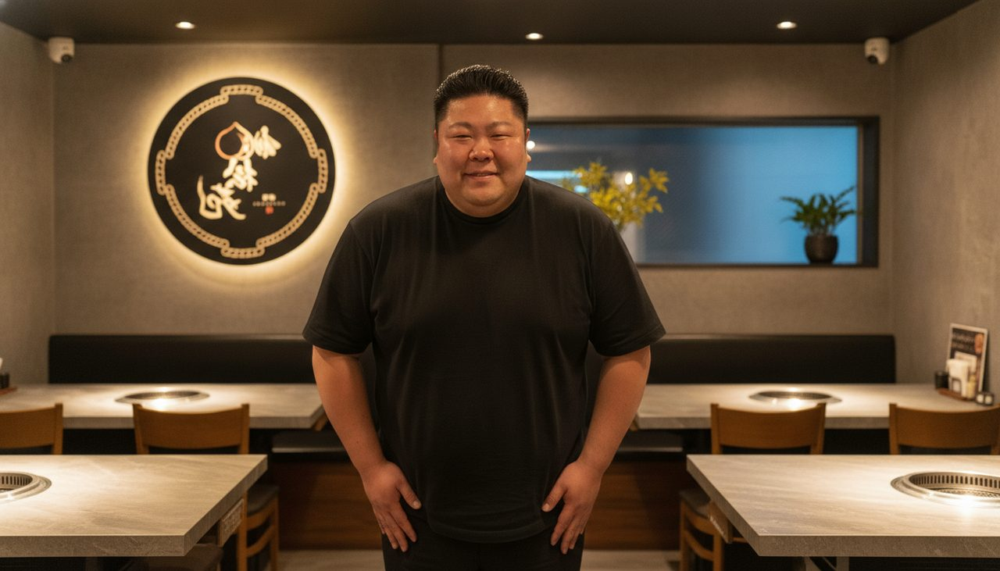

安彦さまが入口に立ってお出迎え。体格の大きさが画で伝わる引き。
店長が切る
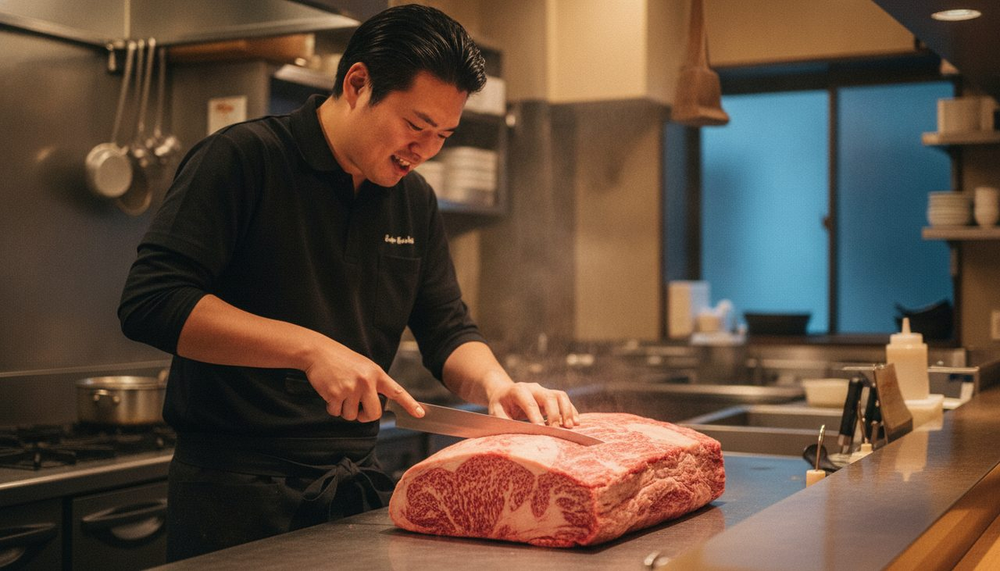
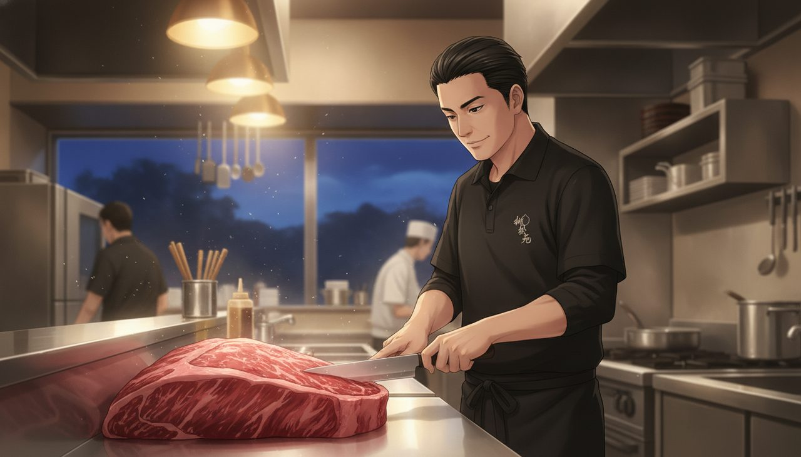
店長さまが牛ハラミの大きなブロックに包丁を入れる。手元と表情の両方が入る構図。
見送り


お二人が並んで店の前に立ち、女性グループをお見送り。
全12カット（時系列）
比較しやすいよう、実写系・アニメ系とも構成・カット割り・テロップは完全に同じにしてあります。違うのは絵のタッチだけです。
HOOK：ごつい手

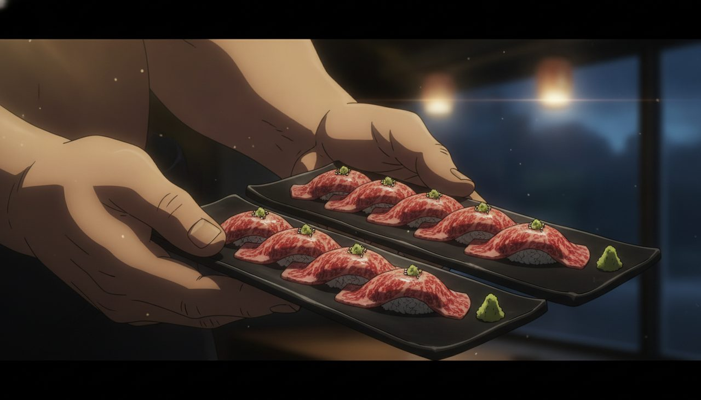
元力士の大きな手が、驚くほど繊細に肉を盛りつける。ヒアリングで安彦さまご自身が挙げられた「ごつい手での繊細な盛り付け」をそのまま冒頭に。
外観・看板
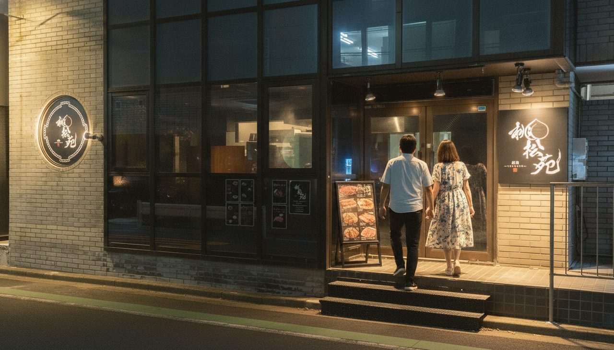

夏の夜。看板に灯りがともる実際の店構え。
サラリーマン4名・メガジョッキ
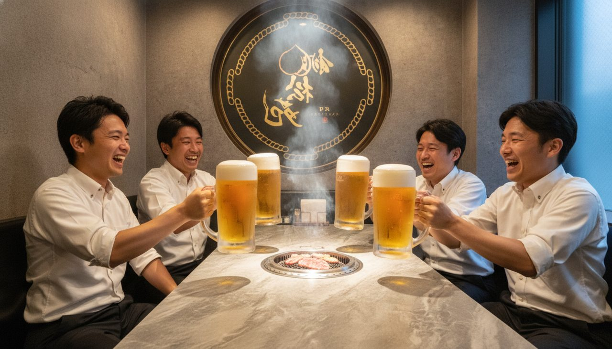
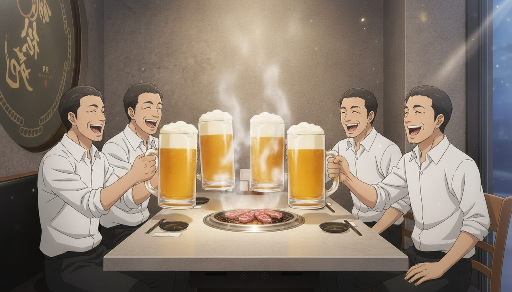
6人テーブルに4名。ワイシャツ・ノーネクタイの夏。全員メガジョッキで乾杯。「でっかいジョッキもあるんだ」と伝わるよう、顔の横に並べてサイズが分かる構図にしています。
奥の女性5名
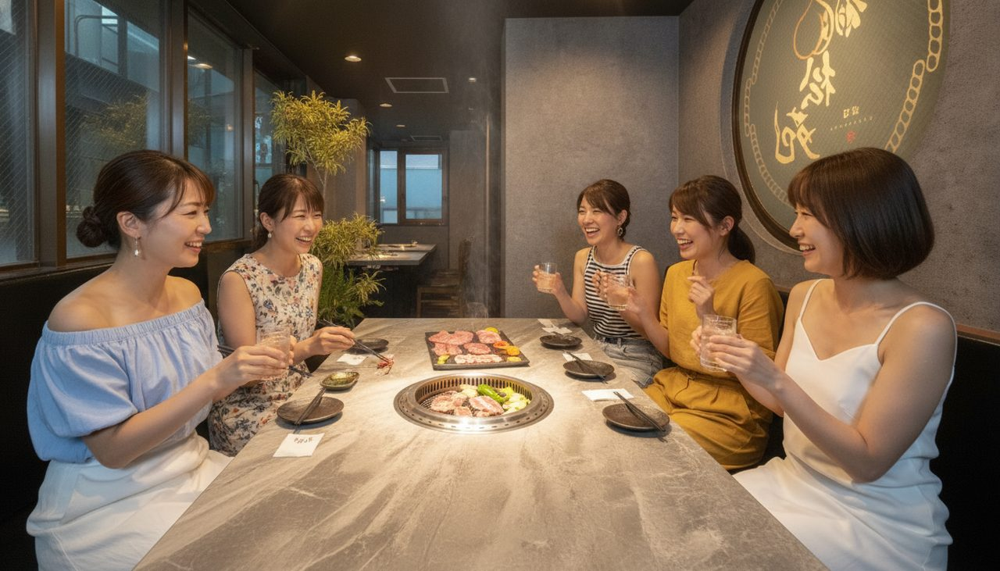
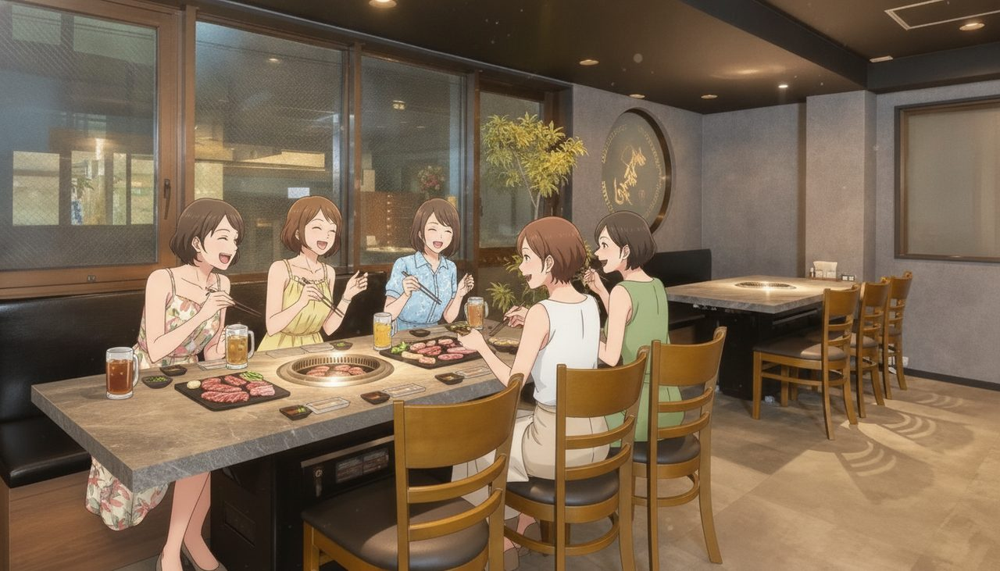
30代のお友達同士5名。夏の私服。無煙ロースターが分かる画角に。※メガジョッキはサラリーマンのみ、というお話どおり通常グラスです。
提供 → 焼く
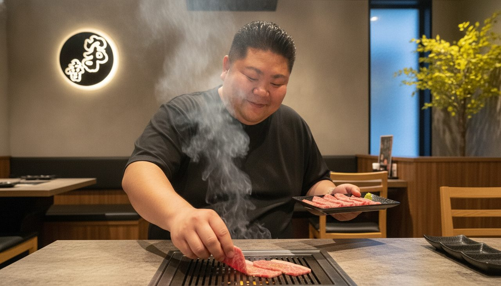
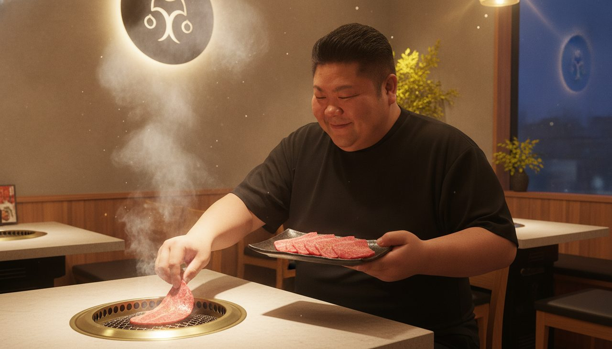
切った肉を安彦さまが運び、そのまま網へ。肉が網に触れた瞬間の湯気。
家族連れテーブルで焼く


ご家族のテーブルで安彦さまが自ら焼く。「2つのメニューだけ僕が毎日焼いてます」というお話をそのまま画に。
店長の一品
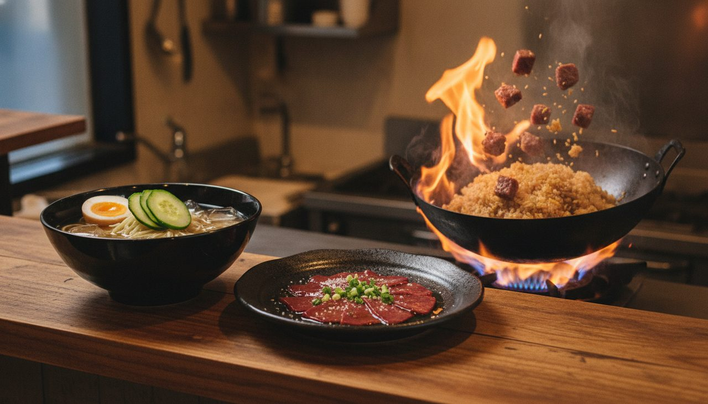
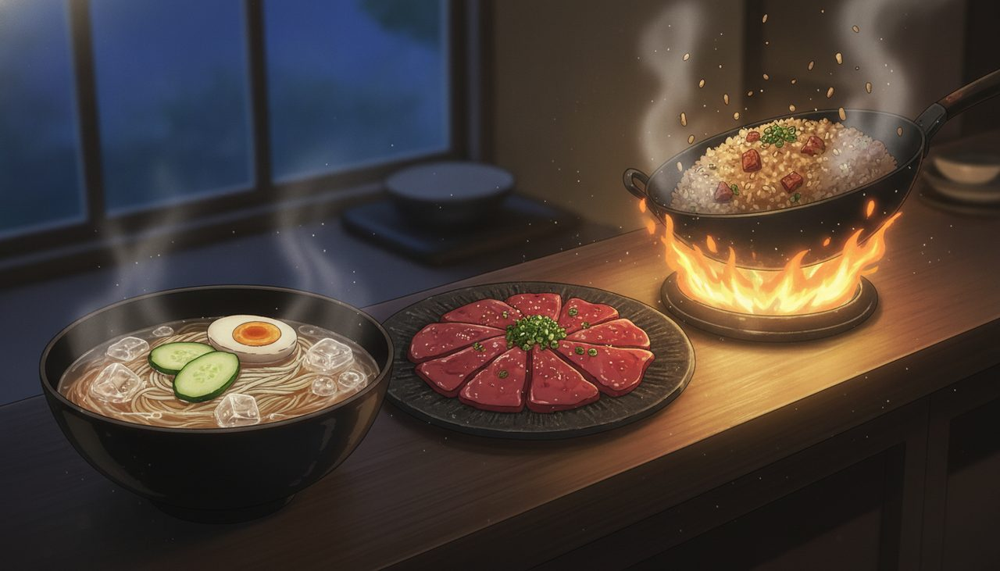
冷麺・レバ刺し・和牛チャーハン（炎の鍋振り）。
店内の幸せ


極厚タンの寄りから店内へ。奥にご老人夫婦・カップルもちらりと。
エンドカード
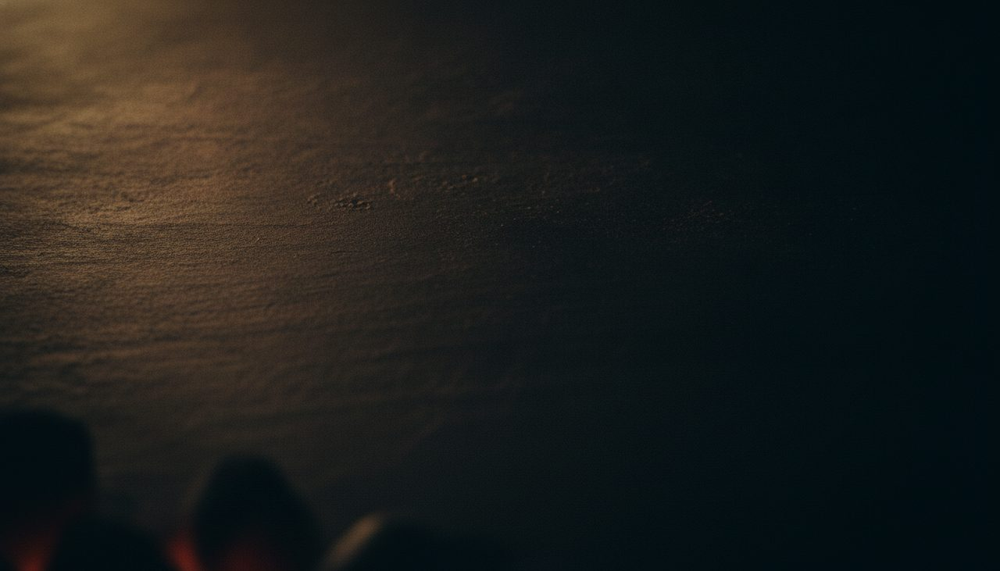
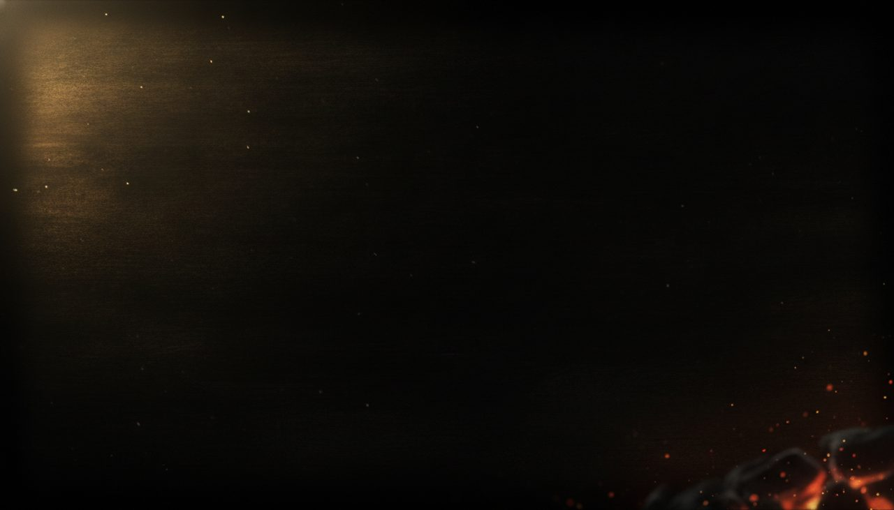
QR（公式HP）・お電話番号・ご住所。※ロゴは最終版で実際のロゴに差し替えます。
それぞれの向き・不向き（正直なところ）
| 実写系 | アニメ系 | |
|---|---|---|
| お肉のシズル感 | ◎ 圧倒的に強い | ○ きれいだが実写には及ばない |
| お二人の体格・存在感 | ◎ 元力士の迫力がそのまま出る | ○ やわらかい印象になる |
| 「本当にやっている店」の説得力 | ◎ | △ |
| 女子会層への届きやすさ | ○ | ◎ 親しみやすく敷居が下がる |
| 店内の生活感の整理 | △ 写り込みがそのまま出る | ◎ 見せたいものだけ描ける |
ご参考：焼肉店さまでアニメ系を選ばれた事例では、こちらの動画のようなテイストになります。
ご確認いただきたい点
- 実写系 / アニメ系 どちらで進めるか（今回の一番の目的です）
- 全体の構成・流れはこの方向性で問題ないか
- 気になるシーン・修正したい点があれば、シーン番号（S01〜S12）でお知らせください
なお、修正対応は原則1回までとさせていただいております。お気づきの点は、シーン番号と一緒にまとめてお知らせいただけますと幸いです。
いくつか、こちらで決めて進めた点（違っていればお知らせください）
| 項目 | 今回の組み方 |
|---|---|
| サラリーマンの人数 | 4名（お打ち合わせで「4の方が良い」とお伺いしたため。ヒアリングシートには5名とご記載がありました） |
| 尺 | 約52秒（ご指定のシーンが9点あるため）。30秒の短縮版もお作りできます |
| ナレーション | なし（テロップ＋BGM）。ご指定がなかったためこの形にしています |
| 季節 | 夏（「とりあえず夏用」とお伺いしたため）。2本目は秋冬でのご相談かと存じます |
| エンドカード | QR・お電話番号・ご住所の3点（ご記載どおり）。営業時間も入れる場合はお知らせください |
| お名前の表記 | とうしょうえんと読ませていただいています |
| ご経歴の扱い | お二人のご経歴（追手風部屋・店長さまがちゃんこ責任者だったこと）を最大の強みと捉えて言語化しています。表に出したくない場合はお知らせください |
・画像内の丸看板のロゴは仮のものです。最終版では実際の桃松苑さまのロゴに差し替えます。
・テロップ・QRコードはまだ乗せていません。絵の方向性のご判断に集中していただくためです。
・お送りいただいた仕込み・お料理のお写真をいただけましたら、該当シーンをより実物に近づけます。